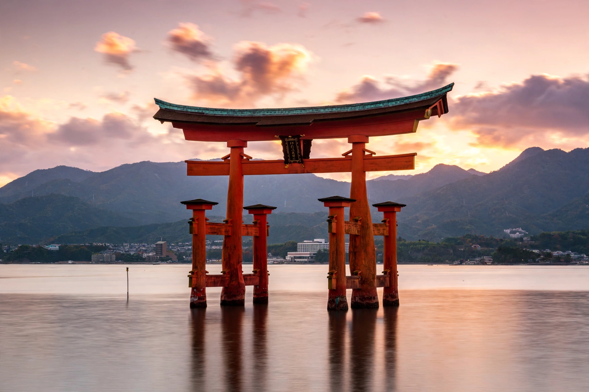

From Wikipedia, the free encyclopedia
| Shinto | |
|---|---|
| Type | Indigenous religion of Japan |
| Key concept | Kami (spirits/deities inhabiting places, phenomena, ancestors) |
| Major shrines | Ise Grand Shrine; Itsukushima Shrine; Fushimi Inari |
| Texts | Kojiki (712); Nihon Shoki (720) — mytho-historical chronicles |

Shinto ('the way of the kami') is the indigenous spiritual tradition of Japan, centred on ritual devotion to kami — sacred spirits associated with natural features, phenomena, places, ancestors and deities such as the sun goddess Amaterasu. It has no formal dogma or single scripture, emphasising ritual purity, festivals (matsuri) and harmony with the natural world, and it coexists syncretically with Buddhism in the lives of most adherents.
Worship takes place at tens of thousands of shrines (jinja), entered through torii gates and marked by sacred ropes (shimenawa); visitors wash for purification, offer coins, bow and clap to summon the kami. The imperial house claims descent from Amaterasu, and the Ise Grand Shrine is ritually rebuilt every twenty years. From 1868 to 1945 'State Shinto' made shrine observance a civic duty tied to emperor worship; after 1945 it was disestablished, while folk practice, New Year visits, weddings and festivals continue to structure Japanese life.